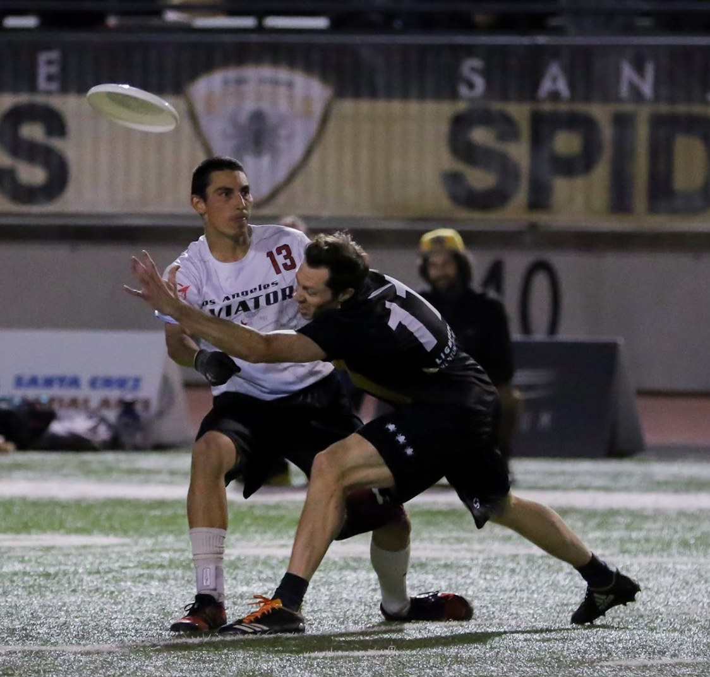
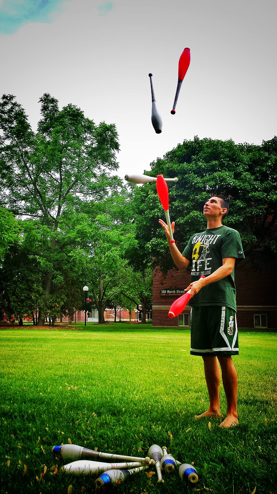

Who is Kyle Conniff?
If you want to know more about Kyle the human, read on!
Beyond teaching and academics, I have quite a few hobbies that generally fall under the umbrellas of athletics and nerdom.
As an athlete:
Ultimate

I play Ultimate competively, including professionally, high-level club, and internationally. My recent teams include Madison NOISE (2025), Sublime at TEP (2025; sponsored by Sublime Ultimate), Family Style (2024), and the Los Angeles Aviators from 2019-2021. But my first true love in Ultimate is playing on the beach! I also coach with Ultimate Peace. And look to further expand Ultimate into Indigenous communities and international communities.Above is a photo from my first Game of the Week in front of an international audience (PC: Meg Hofner). This particular throw ended up making the top plays of the week (well, technically, the catch made the top plays of the week). The video is below.
Juggling

I have also been a semi-active juggler since 2009. My best friend in high school was one of the world's best jugglers at the time and we spent many hours every week working on the ultimate craft for introverts. The picture to the right (PC: Casey Rentmeester) is a classic 5 club cascade (cascade = the normal juggling pattern for an odd number of objects).My personal records are 9 balls, 7 rings, and 6 clubs. Presently, when I juggle I like to work on passing patterns (2 or more people juggling together by throwing objects back and forth) with 6, 7, and 8 clubs, or to play combat with 3 clubs.
As a nerd:
Watching Anime
When I am recovering from my more active endeavors, I enjoy watching anime. I, unapologetically, watch both subbed and dubbed. I tend to watch my favorites and Shounen dubbed, whereas slice of life, or more anime with more everyday usage I watch in subbed.
My favorites are old-school: Yu Yu Hakusho and Rurouni Kenshin. However, I have watched a lot of good anime and definitely recommend:
- Soul Eater
- Toradora
- Love, Chuunibyou & Other Delusions
- Prince of Stride: Alternative
- Wolf Children.
I am currently watching Gachiakuta, Umamusume, Dragon Raja-The Blazing Dawn, Rent-a-Girlfriend, Steins;gate, Bartender: Glass of God, Jujutsu Kaisen (S3), Frieren: Beyond Journey's End (S2), My Hero Academia: Vigilantes (S2), Hell's Paradise (S2), and Fire Force (S3 pt2).
Reading
Sticking with the theme of escapism, I love to read science fiction, fantasy, and dystopian future novels, especially targetting the young adult audience. I can get lost in 3-10 book series through which I feel a connection with the main characters.
Some of my favorites include:
- The Name of the Wind (by Patrick Rothfuss)
- The Hunger Games (by Suzanne Collins)
- Graceling Realm (by Kristin Cashore)
- An Ember in the Ashes (by Sabaa Tahir)
- The Lorien Legacies (by Pittacus Lore)
- Red Rising Saga (by Pierce Brown)
I am currently reading Ashfall Propechy by Pittacus Lore and short stories in Spanish and Japanese to practice the languages.
Studying Languages
One of my quieter hobbies is studying languages. I’m not fluent in anything yet, but I enjoy the process of learning and improving over time. One of my long-term goals is to become conversational in several languages and to live completely immersed in various countries abroad.
My current and future languages are:
- Japanese
- Spanish
- Arabic (Levantine)
- (Brazilian) Portuguese
- Menominee
I actively study about 10 hours per week through textbooks, online programs, tutors, and YouTube (don't worry, I also keep my streak alive by playing DuoLingo).
Card Collecting and Playing Video Games
I caught the card collection bug as a kid, mainly with sports cards. Now I'm more selective, primarily sticking to:
- Yu Yu Hakusho
- Original Pokemon sets
- Original Digimon sets
- Old Yu-Gi-Oh!
I also, very casually, play some video games. I mostly like to work my way through various games from a wide-variety of genres for fun, nostalgia, and completionist tendencies.
- On Handhelds (Gameboy and Phone)
- First Generation Pokemon Games
- Second Generation Pokemon Games
- Pokemon Go
- Pokemon Trading Card Game
- Yu-Gi-Oh!: Dungeon Dice Monsters
- On Switch
- Tony Hawk Pro Skater 1+2
- Hogwarts Legacy
- Pokemon Legends Arceus
- Crash Bandicoot Trilogy
- On Xbox
- TimeSplitters2
- TimeSplitters: Future Perfect
- The Elder Scrolls IV: Oblivion
Occasionally, I will sit down and play the worst gold/platinum rank Rocket League this world has ever seen with my brothers.
Fast Facts
- Favorite Movie: Wolf Children
- Favorite Movie Universe/Series: (Blue People) Avatar
- Favorite Book: Jane, Unlimited (Kristin Cashore) and Speaker of the Dead (Orson Scott Card)
- Favorite Book Universe/Series: The Kingkiller Chronicles (Patrick Rothfuss) and Graceling Realm (Kristin Cashore)
- Favorite Video Game: The Elder Scrolls V: Skyrim
- Favorite Comfort Video Game: Pokemon Yellow Version on Gameboy
- Favorite Anime: Yu Yu Hakusho
- Favorite Place Traveled: Karijini National Park, Australia
- Favorite Food: Pepperoni Pizza
- Favorite Drink: Water
- Favorite Research Project: Time scales Assessment
- Favorite Academic Presentation: On the choice of time scale in dementia research with time-to-event outcomes
Drake Tribute
 Drake was a pitbull-mix pound-rescue who came into Kyle's life in the fall of 2021. Drakey was a beautiful old dog with the attitude of an old, grumpy war vet. He wanted everyone to stick to their routines, take him for walks, and pay him the right amount of attention. He passed in his sleep after suffering a stroke at almost 15 years old.
Drake was a pitbull-mix pound-rescue who came into Kyle's life in the fall of 2021. Drakey was a beautiful old dog with the attitude of an old, grumpy war vet. He wanted everyone to stick to their routines, take him for walks, and pay him the right amount of attention. He passed in his sleep after suffering a stroke at almost 15 years old.